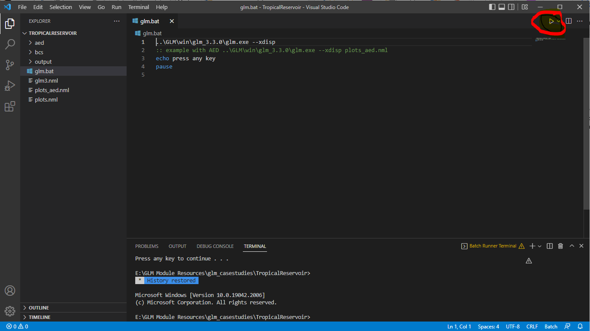
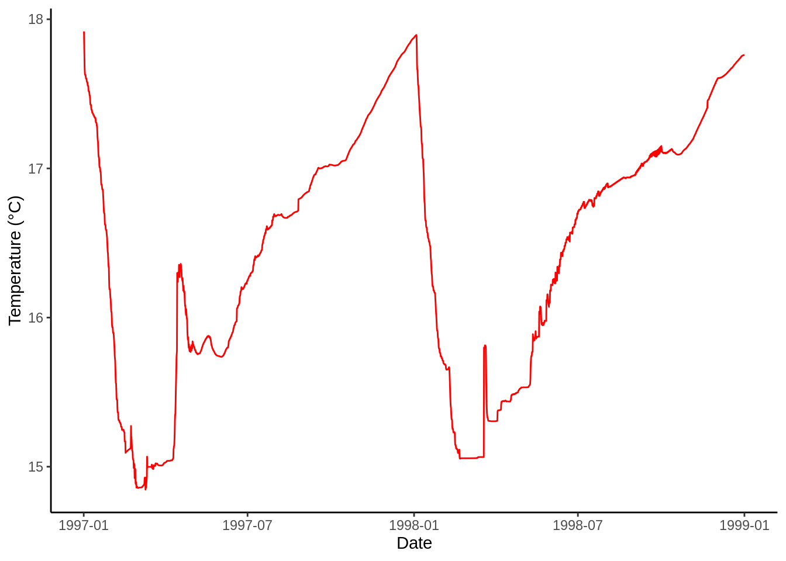

Running GLM
Running GLM (Suggested Method)
Install Visual Studio Code
Visual Studio Code (VSC) is a convenient tool for editing and running GLM in an integrated environment. Begin by downloading VSC here.
Open the WarmLake Directory in VSC
Launch VSC and click the Explorer button then Open Folder. Next, navigate to the WarmLake directory and click Open.
Enable Syntax Highlighting and Open a .nml File
GLM’s WarmLake simulation can be configured by editing it’s .nml text files in VSC. For better legibility when editing a .nml, enable Fortran syntax highlighting. Click on the Extensions button and search for the Fortran extension to install. Once installed, click on the Explorer button again and open the glm3.nml file. In the bottom right-hand corner, click on Plain Text and search for Fortran - Modern.
Run GLM
To launch GLM, first open a new terminal session from VSC’s menu bar. Depending on your operating system, the commands to run the simulation will differ:
MacOS/Linux
- Begin by typing
chmod +x run_glm.shin the terminal and press Enter. This will enable executable permissions for the shell script that launches GLM.
chmod +x run_glm.sh once! Subsequent launches of GLM will not require this command to be executed.
Next, run the GLM shell script by entering
sh run_glm.shinto the terminal prompt.You’ll then be prompted to select which GLM plotting script will be used to visualise the model’s outputs as it runs. Enter
1and the simulation will launch with the basic visualisation configuration (temperature and salinity).
sh run_glm.sh in VSC’s terminal.
- Once the simulation has finished, click Done and return to the terminal to either re-run the model or quit (option
4).
Windows
Running GLM (Alternative Method)
Running GLM on MacOS
- Open the Terminal application on your Mac
- Use the
cd(change directory) command to navigate to the simulation directory (e.g. the WarmLake folder) - In Finder, go to the
GLM/macfolder and right-click on the glm app, select Show Package Contents - Enter the Contents folder then the MacOS folder, and locate the glm executable file
- Back in terminal, enter the file path for this executable file - you can do this by dragging/dropping the file into the terminal
- Leave a space after the file path and type
--xdisp - Press
Enterand the model will run
These steps are shown in the screen recording below for an example simulation:
Running GLM on Windows
On Windows, the model can be run using a batch-file glm.bat, which you can open from in the simulation directory (e.g. Kinneret97 folder). The .bat file calls the GLM model from the current working directory, and should be located where the `glm.nml’ file is.
If the model is not opening make sure that you are not working from a network directory (e.g. OneDrive) and the file path to the glm.bat file has zero spaces in it.
Running and editing GLM with Visual Studio Code
Visual Studio Code (VSC) is a convenient tool for editing and running GLM in an integrated environment. To work with Visual Studio Code:
- Download VSC from the website https://code.visualstudio.com/
- Install VSC onto your computer
- Open the GLM case study folder (e.g. TropicalReservoir) by clicking
File–>Open Folder
- Open the
glm3.nmlby clicking the file name on the left file list panel, for viewing and editing the GLM configuration file - If you are using Windows, open the glm.bat batch-file, click the Run symbol (see figure below) to run GLM
- If you are using Mac, open a termial (by cliking
Terminal–>New Terminal), then enter your commend in the terminal window to run GLM - You can now edit the glm3.nml file to change your configurations and run GLM in a same environment to see the changes in the outputs

If you are new to Visual Studio Code and the software is being run for the first time, you would need to install the following extensions:
- NewGRF Meta Language extension for better visualising and editing nml files;
- Batch Runner extenstion to run the batch file
Visualising Results
Depending on your preference for visualisation software, both Excel and R can be used for the plotting of GLM’s general lake or depth-specific csv outputs. R is required for visualising NetCDF outputs.
R
# Load packages
library(tidyverse)
library(lubridate)
read_csv("plots/processing-outputs/WQ_5.csv") %>% # Read GLM csv
mutate(
time = as_datetime(time, format = "%Y-%m-%d %H:%M:%S") # Format date/time
) %>%
ggplot(mapping = aes(x = time, y = temp)) + # Plot with ggplot()
geom_line(colour = 'red') +
labs(x = "Date", y = "Temperature (°C)") +
theme_classic()